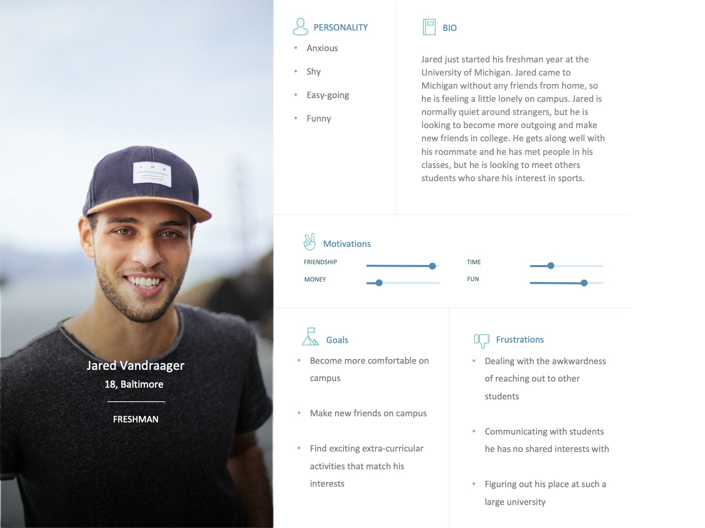
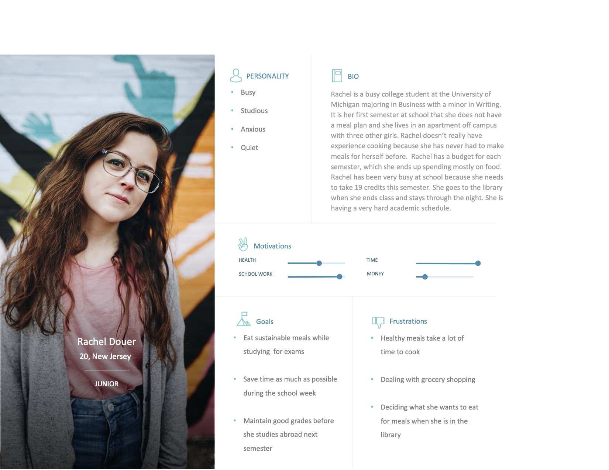
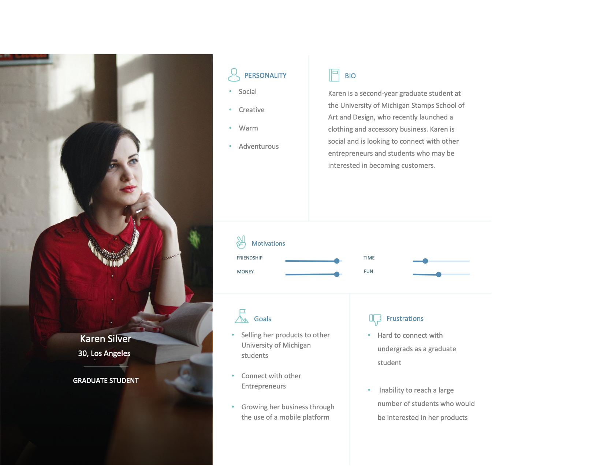
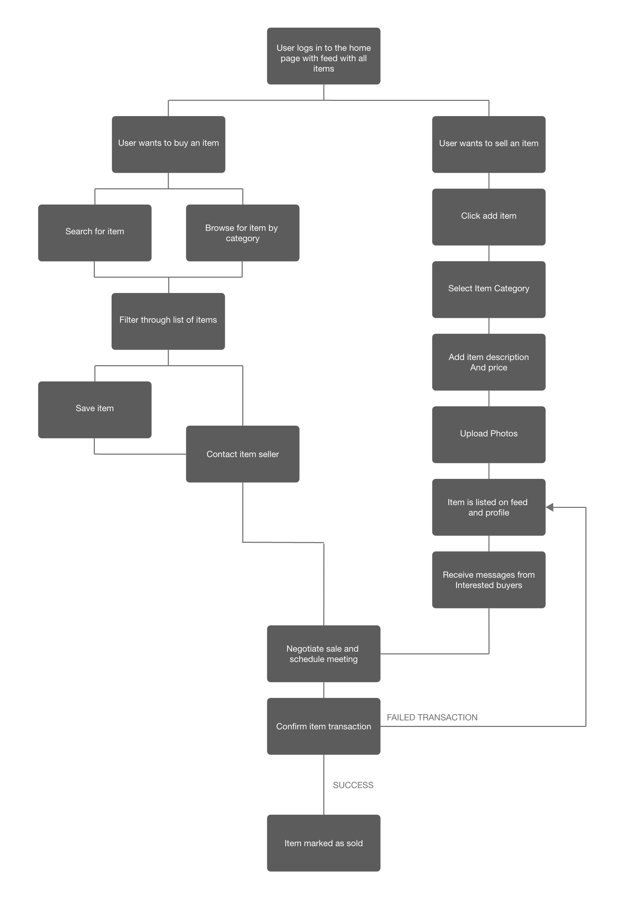
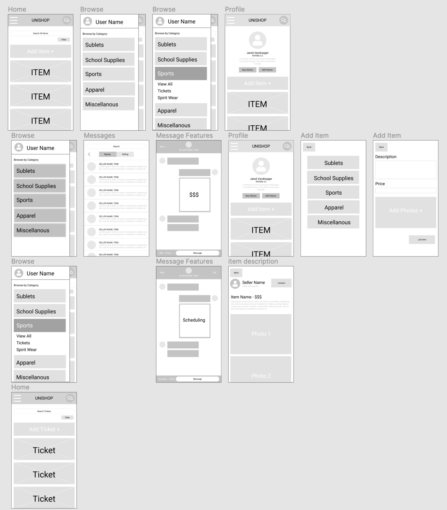

Project Overview:
For the course SI 482, Interaction Design Studio, we were tasked to design a product that strengthens a community. Our team decided to focus on the student community. We found that college students often report frustrations at having to use multiple platforms when looking for a marketplace to buy and sell items from each other such as sports tickets, textbooks, and student housing. To solve this issue we created Unishop, a streamlined marketplace application for students on campus
Problem Statement:
“Students need a centralized platform to buy and sell items on campus so that they can connect with the college community.”
Competitive Analysis:
The first research method our team utilized was a competitive analysis. We considered both direct and partial competitors such as Facebook, Ebay, Craigslist, and Poshmark. From our research, we found that there was no competitor specifically targeting the college market. We also learned that our solution must include the following factors to address our problem statement:
- Categories- so that they can navigate through the platform
- Search bar- to search for specific items
- Messaging- to discuss transaction details (payment methods and pickup locations)
- Security- limited to students
- Effective usability- the platform must be an easy and enjoyable experience for users
Personas:
After conducting interviews, our team identified three different personas and scenarios for our application
  User Flows:
Based off our user research, we created user flows to support the different interactions that were necessary for our application
Wireframes:
Our team discussed different ideas and collaborated to create design solutions for the main interaction pages of our application
From our wireframes, we were able to form a paper prototype in order to test users and learn how we could improve our design to create better usability for our application.
Final Design:
After identifying usability issues and updating our design, our team created a lo-fidelty prototype. To validate our design, we performed another round of testing. Once our decisions were verified, we created a high fidelity final design for Unishop.